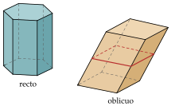
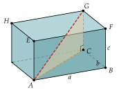
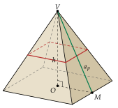
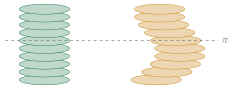
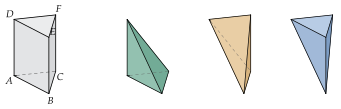
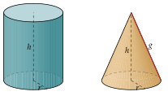
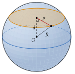
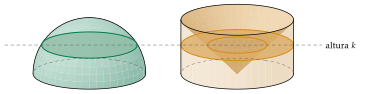

Sean α∥β dos planos distintos, R una región poligonal en α y ℓ una recta que corta a ambos planos pero no a R. El prisma es la unión de todos los segmentos paralelos a ℓ que unen un punto de R con un punto de β. Las bases son R y la región correspondiente en β (que es congruente con ella); las caras laterales son paralelogramos y sus lados no comunes con las bases son las aristas laterales, todas paralelas y congruentes. La altura es la distancia entre los planos de las bases.
Un prisma es recto si sus aristas laterales son perpendiculares a las bases (las caras laterales son entonces rectángulos), y oblicuo si no. Es regular si es recto y su base es un polígono regular. Una sección transversal es la intersección del prisma con un plano paralelo a las bases; una sección recta es la intersección con un plano perpendicular a las aristas laterales.

Todas las secciones transversales de un prisma son congruentes con la base.
El área lateral de un prisma es el producto del perímetro de una sección recta por la longitud de la arista lateral. En un prisma recto, es el perímetro de la base por la altura.
(i) Si P1⋯Pn es la base y Q1⋯Qn la sección transversal, cada PiPi+1Qi+1Qi es un paralelogramo (sus lados PiQi y Pi+1Qi+1 son paralelos, y los lados PiPi+1 y QiQi+1 son paralelos por el Teorema 8.2.3); así los lados correspondientes son congruentes, y también las diagonales PiPj y QiQj.
Los polígonos se descomponen en triángulos congruentes por L-L-L.
(ii) La sección recta corta cada cara lateral en un segmento perpendicular a las aristas laterales, que es una altura del paralelogramo correspondiente si se toma la arista lateral ℓ como base. El área lateral es ∑isiℓ=ℓ∑isi, donde si son los lados de la sección recta.
Un paralelepípedo es un prisma cuya base es un paralelogramo; todas sus seis caras son paralelogramos. Un ortoedro (paralelepípedo rectángulo, o “caja”) es un paralelepípedo recto de base rectangular; un cubo es un ortoedro de aristas iguales.
Las cuatro diagonales de un paralelepípedo se cortan en su punto medio. En un ortoedro de aristas a, b, c, las cuatro diagonales miden a2+b2+c2.
Sean ABCD y EFGH caras opuestas, con aristas AE, BF, CG, DH paralelas y congruentes.
Entonces ACGE es un paralelogramo y sus diagonales AG y CE se bisecan.

Del mismo modo AG y BH se bisecan (paralelogramo ABGH), y AG y DF.
Las cuatro pasan por el punto medio de AG.
En el ortoedro, por Pitágoras en la base, AC2=a2+b2, y por Pitágoras en el rectángulo ACGE, AG2=AC2+CG2=a2+b2+c2.
Sea R una región poligonal en un plano α y V un punto fuera de α. La pirámide de base R y vértice (o cúspide) V es la unión de todos los segmentos VP con P∈R. Su altura es la distancia de V a α. Es regular si la base es un polígono regular y el pie de la altura es el centro de la base; en ese caso las caras laterales son triángulos isósceles congruentes, y la altura de cada uno de ellos es la apotema de la pirámide.
Cambie el número de lados, la altura y la inclinación. Compare la pirámide con el prisma de igual base y altura.

Una sección de una pirámide de altura h por un plano paralelo a la base, a distancia k del vértice, es un polígono semejante a la base con razón hk; su área es (hk)2 veces el área de la base.
Si la base es P1⋯Pn y la sección es Q1⋯Qn, por el Teorema 8.2.3 cada QiQj es paralelo a PiPj, y en el triángulo △VPiPj, por Thales y A-A, PiPjQiQj=VPiVQi.
Por Thales en el espacio, esa razón es la misma para todos los i e igual a hk (comparando con la altura).
Los polígonos tienen todos sus lados y diagonales en la razón hk, luego son semejantes, y las áreas están en la razón (hk)2 (ejercicio 12 del capítulo 6).
Elija el sólido y mueva la altura del corte. Arrastre para girar.
El área lateral de una pirámide regular es la mitad del producto del perímetro de la base por la apotema de la pirámide.
A cada sólido S (poliedros, cilindros, conos, esferas y sus uniones finitas) le corresponde un número positivo V(S), su volumen, tal que:
sólidos congruentes tienen el mismo volumen;
si S=S1∪S2 y los dos sólidos se cortan a lo sumo en regiones planas, V(S)=V(S1)+V(S2);
el volumen de un ortoedro es el producto de sus tres aristas: V=abc;
(Principio de Cavalieri) si dos sólidos tienen bases en un mismo plano y todo plano paralelo a ese plano corta a ambos en secciones de igual área, entonces tienen el mismo volumen.
Tuerza la pila de monedas: el volumen no cambia.

El volumen de un prisma es el producto del área de la base por la altura: V=Bh.
Sea un prisma de base de área B y altura h. Construimos un ortoedro de altura h cuya base sea un rectángulo de área B (de lados B y 1, por ejemplo), con la base en el mismo plano. Todo plano paralelo a las bases corta al prisma en una región congruente con la base (Teorema 8.6.2) y al ortoedro en un rectángulo de área B. Por Cavalieri, los volúmenes son iguales, y el del ortoedro es B⋅1⋅h=Bh por V3.
El volumen de una pirámide es un tercio del producto del área de la base por la altura: V=31Bh.
Paso 1. Dos pirámides con bases de igual área y alturas iguales tienen el mismo volumen: por el Teorema 8.6.6, a la misma distancia k del vértice las secciones tienen áreas (hk)2B en ambas, y basta aplicar Cavalieri.

Paso 2. Un prisma triangular de bases △ABC y △DEF (con aristas laterales AD, BE, CF) se descompone en las tres pirámides triangulares de vértices {A,B,C,D}, {B,D,E,F} y {B,C,D,F}.
La primera y la segunda tienen bases congruentes (△ABC y △DEF) y la misma altura (la del prisma).
La segunda y la tercera, vistas con vértice D, tienen bases △BEF y △BCF, que son congruentes (las dos mitades del paralelogramo BCFE), y la misma altura (la distancia de D al plano de esa cara).
Por el paso 1, las tres tienen el mismo volumen, que es entonces 31Bh.
Paso 3. Una pirámide cualquiera se divide en pirámides triangulares de la misma altura triangulando la base; sumando, V=31(B1+⋯+Bk)h=31Bh.
Un cilindro circular se define como el prisma, cambiando la región poligonal por un círculo; un cono circular, como la pirámide, con base circular. Son rectos si el eje (el segmento que une los centros de las bases, o el vértice con el centro de la base) es perpendicular a la base. La generatriz g de un cono recto es la distancia del vértice a un punto de la circunferencia de la base: g=r2+h2.

Para un cilindro y un cono de radio r y altura h: Vcilindro=πr2h,Vcono=31πr2h. Si son rectos, el área lateral del cilindro es 2πrh y la del cono es πrg.
Los volúmenes salen de Cavalieri, comparando con un prisma y una pirámide de base de área πr2 y la misma altura: las secciones del cono a distancia k del vértice son círculos de radio hkr y área (hk)2πr2, igual que las de la pirámide.
El área lateral del cilindro recto se obtiene desenrollándolo en un rectángulo de lados 2πr y h.
La del cono recto se desenrolla en un sector circular de radio g y arco 2πr, cuya área es 2(2πr)g=πrg (Teorema 7.8.4).
La esfera de centro O y radio r es el conjunto de los puntos del espacio cuya distancia a O es r. La bola es la esfera junto con su interior.
La intersección de una esfera con un plano a distancia d<r del centro es una circunferencia de radio r2−d2 (por Pitágoras, con centro en el pie de la perpendicular desde O). Si d=0 es una circunferencia máxima.

El volumen de una bola de radio r es 34πr3.
Comparamos una semiesfera de radio r con el sólido que se obtiene de un cilindro de radio r y altura r quitándole un cono de vértice en el centro de la base inferior y base igual a la tapa superior (la “anticlepsidra” de Arquímedes). Pongamos ambos sobre un mismo plano y cortemos a la altura k:
la sección de la semiesfera es un círculo de radio r2−k2, de área π(r2−k2);
la sección del otro sólido es una corona circular entre radios k (el cono, cuyo radio a altura k es k) y r, de área πr2−πk2.
Las áreas son iguales para todo k. Por Cavalieri, Vsemiesfera=πr2⋅r−31πr2⋅r=32πr3, y la bola completa tiene volumen 34πr3.
Mueva el plano de corte: la sección de la esfera y el anillo del cilindro menos los conos tienen siempre la misma área.

El área de una esfera de radio r es 4πr2.
Imaginemos la superficie de la esfera dividida en regiones muy pequeñas, casi planas, de áreas A1,A2,…,An.
Uniendo cada una con el centro se obtiene un sólido que es casi una pirámide de altura r y volumen ≈31Air.
Sumando, 34πr3≈31(A1+⋯+An)r, y la aproximación es tanto mejor cuanto más finas son las regiones.
En el límite, el área A de la esfera cumple 34πr3=31Ar, es decir, A=4πr2.
Arquímedes consideró este resultado (la esfera tiene dos tercios del volumen y del área total del cilindro que la circunscribe) como su descubrimiento más importante, y pidió que en su tumba se grabara una esfera inscrita en un cilindro. Cicerón cuenta que, siglos después, encontró la tumba gracias a ese grabado.
Un tanque tiene forma de cilindro de radio 1 m y altura 3 m con dos semiesferas en los extremos. Su volumen es π⋅12⋅3+34π⋅13=313π≈13,6m3, y su área exterior es 2π⋅1⋅3+4π⋅12=10π≈31,4m2.
Próxima semana: Coordenadas en el plano